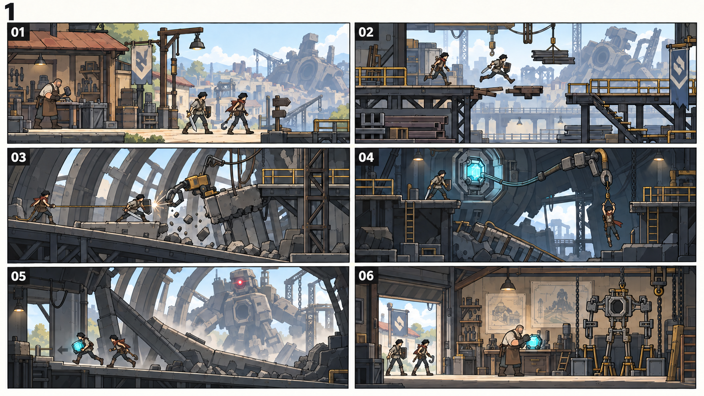
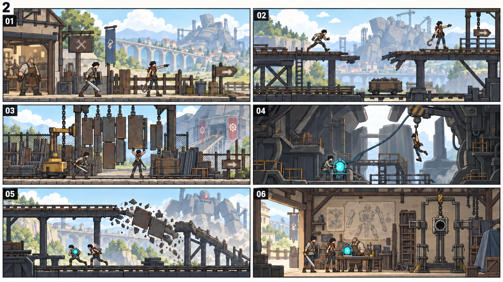
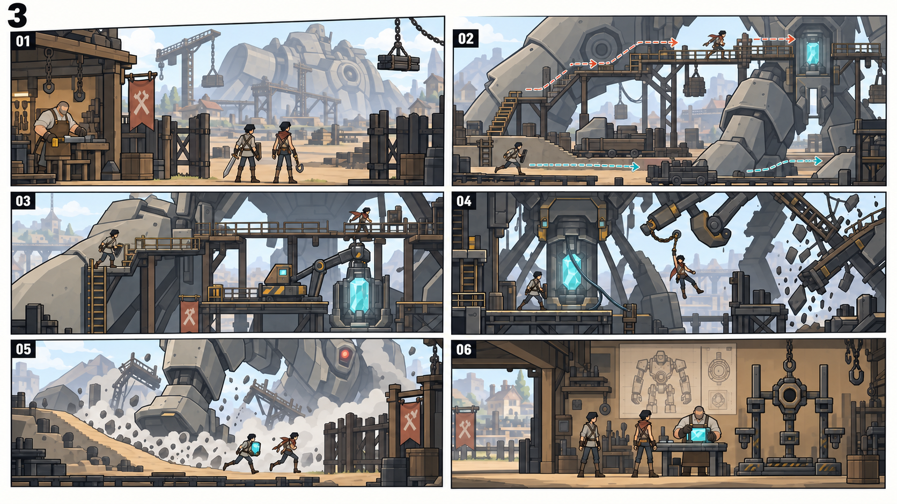

그래픽 제작 문서
도입 맵·플레이 진행 · 씬 구성 3안
같은 맵의 대화·처치 반복을 공간 이동과 상태 변화로 바꾸는 Human 선택용 제안입니다.
분류:그래픽 제작 문서
1. 공통 진행 원칙
- 세 안 모두 핵 분리로 구조 성공 → 비상 각성·소켓 봉쇄 → D-30 표시 → 핵을 지닌 채 귀환 → 지도·0% 차고 공개 순서를 지킨다. 병기는 핵을 쫓는 것이 아니라 저장된 중앙 지휘소 좌표로 이동한다.
- 총 20~30분은 플레이 검증 목표다. 대사 대기나 반복 적 스폰으로 시간을 맞추지 않는다.
- 각 번호는 한 화면의 고정 길이가 아니라 공간의 목적과 사건을 묶은 구간이다. 필요한 만큼 연속된 Composition으로 연결한다.
- 이동/관찰 → 경로 문제 → 목적이 있는 전투 → 지형 변화 → 구조 선택 → 달라진 귀환 → 새 목표 공개로 행동의 종류를 바꾼다.
- 긴 정지 대화는 출발 의뢰·구조 결정·귀환 분석에 집중하고 나머지 정보는 이동 중 말풍선과 지형으로 전달한다.
- 필수 전투는 길/설비를 바꾸는 역할이 있어야 한다. 같은 방에서 동일한 처치 조건을 다섯 번 반복하는 단계를 기준으로 설계하지 않는다.
- 핵/회수팔/고대 병기/차고 골격의 그림은 공간·스케일 검토용 임시 표현이다. 이 씬 후보가 REF-02~05의 개별 자산 승인 또는 runtime 구현 완료를 뜻하지 않는다.
2. 세 안의 차이
| 안 | 동선 | 주요 경험 | 제작 시 주의점 |
|---|---|---|---|
| 1안 · 상층 진입 · 붕괴 · 하층 귀환 | 고물상 → 상층 선별 데크 → 폐병기 외곽 경사로 → 붕괴 후 하부 제어실 → 하층 정비 통로 → 고물상 차고 | 높이와 길이 바뀌는 원형 동선. 갈 때 내려다본 길을 돌아올 때 직접 사용한다. | 공간 기억과 사건의 결과가 가장 선명하다. 상·하층 연결, 낙하 안전선과 귀환 shortcut을 정교하게 저작해야 한다. |
| 2안 · 수거장 밖으로 나가는 짧은 원정 | 고물상 → 운반 레일 둑길 → 폐병기 수거 게이트 → 흉곽 서비스 베이 → 바뀐 레일 하부 귀환길 → 차고 | 길게 뻗은 이동 동선과 연속된 랜드마크. 생활권을 떠나 위험 현장에 도착하는 거리감을 만든다. | 명확하게 앞으로 가는 진행이라 처음 플레이가 쉽다. 단순 왕복으로 느껴지지 않도록 귀환 지형 변화가 중요하다. |
| 3안 · 거대한 폐병기를 둘러보는 두 갈래 길 | 고물상 → 폐병기 외곽 분기 → 상층 조사길 또는 하부 다리길 → 흉곽 합류 지점 → 구조·각성으로 바뀐 외곽 탈출 → 차고 | 큰 폐병기 하나를 여러 위치에서 보며 지형으로 이해한다. 짧은 경로 선택 뒤 같은 구조 사건으로 합류한다. | 탐색 동기와 거대 스케일이 강하다. 초반 길찾기 혼란과 중복 길 제작량을 통제해야 한다. |
3. 1안 · 상층 진입 · 붕괴 · 하층 귀환
{kind=link}

고물상 → 상층 선별 데크 → 폐병기 외곽 경사로 → 붕괴 후 하부 제어실 → 하층 정비 통로 → 고물상 차고
| 장면 | 공간 | 플레이어 행동 | 눈으로 보이는 변화 | 다음 구간 조건 |
|---|---|---|---|---|
| 01 | 고물상 앞마당 | 작업 중인 주인에게 의뢰를 받고 실제 출구로 이동한다. 라이벌은 길을 앞서 보여 준다. | 작업대·닫힌 차고문·멀리 보이는 폐병기를 첫 기준점으로 기억한다. | 출구 표식을 지나 선별 데크로 이어진다. |
| 02 | 상층 선별 데크 | 자재 사이의 안전한 길을 찾고 끊긴 발판을 점프로 건넌다. 아래 정비 통로가 미리 보인다. | 길의 높이·간격·시야가 변한다. 대화는 이동 중 짧은 말풍선으로 보조한다. | 폐병기 흉곽으로 이어지는 경사로에 도착한다. |
| 03 | 흉곽 앞 경사로 | 지지 케이블을 끌어당기는 수거 유닛을 제압해 막힌 판금 통로를 실제로 연다. | 적 처치 결과로 장애물이 풀리며 통과 가능한 지형이 생긴다. | 라이벌이 안쪽 조사 데크에 진입하면 사건이 시작된다. |
| 04 | 붕괴 후 하부 제어실 | 붕괴로 직접 진입하던 길이 끊긴다. 남은 발판을 따라 다른 높이의 제어핵으로 접근하고 위험을 확인한 뒤 분리한다. | 회수팔에 걸린 라이벌·팽팽한 줄·핵과 팔의 연결이 같은 화면에 보인다. 핵 분리로 실제 장력이 풀린다. | 라이벌이 안전 발판에 올라선 뒤에만 비상 봉쇄와 각성으로 이어진다. |
| 05 | 하층 정비 귀환길 | 제어핵을 지닌 채 라이벌과 하층 출구로 이동한다. 병기가 일어서며 떨어진 판금이 새 경사로가 된다. | 02에서 보았던 아래 길을 사용한다. 고철이 떠오르고 옛 상층 길은 끊겨 원상 반복이 아니다. | 고물상 아래 통로 출구로 귀환한다. D-30 표시는 각성의 결과로 나타난다. |
| 06 | 고물상 내부·차고 | 주인에게 핵을 보여 주고 분석 결과에 따라 지도와 차고문을 직접 확인한다. | 처음에는 닫혀 있던 공간이 열리고 빈 장착부가 있는 0% 골격을 본다. | 자유 지역 선택으로 넘어갈 준비가 끝난다. |
4. 2안 · 수거장 밖으로 나가는 짧은 원정
{kind=link}

고물상 → 운반 레일 둑길 → 폐병기 수거 게이트 → 흉곽 서비스 베이 → 바뀐 레일 하부 귀환길 → 차고
| 장면 | 공간 | 플레이어 행동 | 눈으로 보이는 변화 | 다음 구간 조건 |
|---|---|---|---|---|
| 01 | 고물상과 운반길 입구 | 의뢰를 받아 마을 작업 영역의 끝을 걸어 나간다. | 먼 레일 고가와 폐병기가 목적지를 예고한다. | 두 견습생이 같은 외곽 운반길로 이동한다. |
| 02 | 레일 둑길·운반 교각 | 교각의 끊긴 부분을 발판으로 우회하고 점프해 건넌다. 하부 유지보수 길을 미리 본다. | 개방된 하늘, 높은 교각, 낮은 정비로의 관계로 고물상과 다른 장소를 체감한다. | 담장과 선별 설비가 있는 폐병기 수거 게이트에 도착한다. |
| 03 | 선별 설비 게이트 | 매달린 판금과 통로를 막는 수거 유닛을 상대해 들어갈 틈을 만든다. | 넓은 길에서 좁은 설비 통로로 바뀌며 전투가 출입구 개방과 연결된다. | 열린 통로를 통해 흉곽 서비스 베이로 진입한다. |
| 04 | 흉곽 서비스 베이 | 무너진 인양 데크를 돌아 낮은 제어핵에 접근한다. 팔에 걸려 끌려가는 라이벌을 구하려 핵을 분리한다. | 가까운 철골·직결 케이블·제어 장치가 구조 행동을 설명한다. | 구조 성공 뒤 소켓 봉쇄·단안 점등·불완전한 기립이 발생한다. |
| 05 | 레일 둑길의 귀환 상태 | 기존 상부 길에 떨어진 판금을 피해 하부 정비 길로 돌아온다. | 02와 같은 교각을 다른 높이에서 지나며 멀리 움직이는 병기를 본다. | 고물상 문으로 이어지는 원래 길에 합류한다. |
| 06 | 핵 분석과 차고 공개 | 핵 분석을 지켜보고 지도·빈 골격·장착 위치를 확인한다. | 전투 현장과 대비되는 생활 공간에서 자신이 만든 재난과 다음 행동을 이해한다. | 지역 선택이 열린다. |
5. 3안 · 거대한 폐병기를 둘러보는 두 갈래 길
{kind=link}

고물상 → 폐병기 외곽 분기 → 상층 조사길 또는 하부 다리길 → 흉곽 합류 지점 → 구조·각성으로 바뀐 외곽 탈출 → 차고
| 장면 | 공간 | 플레이어 행동 | 눈으로 보이는 변화 | 다음 구간 조건 |
|---|---|---|---|---|
| 01 | 고물상 출입 게이트 | 의뢰 후 게이트 밖의 거대한 폐병기 측면을 보며 목적지를 확인한다. | 목표의 크기와 도달해야 할 흉곽 위치가 처음부터 읽힌다. | 폐병기 외곽의 분기점으로 진입한다. |
| 02 | 상·하 접근로 분기 | 위쪽 조사 데크와 아래쪽 다리 사이의 길 중 하나로 접근한다. 두 길의 합류 지점이 시야에 보인다. | 플레이어는 경로를 선택하며 같은 검·방패·점프 조작을 다른 지형에서 쓴다. | 선택한 길이 흉곽 입구 앞에서 합류한다. |
| 03 | 흉곽 앞 합류 지점 | 경계 유닛이 막은 통로를 열고 라이벌과 조사 데크에 도달한다. | 앞서 멀리 보던 제어핵·회수팔·조사길의 위치 관계가 가까워진다. | 라이벌의 조사를 계기로 붕괴가 발생한다. |
| 04 | 중앙 구조 공간 | 바뀐 발판을 따라 핵에 접근해 라이벌을 구한다. 분기했던 두 길이 배경에 보여 현재 위치를 잃지 않는다. | 구조의 원인과 해법은 다른 안과 동일하다. 새 보스 처치가 구조 조건이 아니다. | 핵 분리와 구조가 완료되면 비상 각성으로 전환한다. |
| 05 | 일어선 병기 아래 탈출로 | 어깨 쪽 접근로가 접혀 사라지고 드러난 발판을 따라 마을 방향으로 탈출한다. | 02의 거대한 고정 지형이 움직이기 시작해 같은 공간의 의미가 바뀐다. | 익숙한 게이트로 돌아간다. |
| 06 | 고물상 차고 | 핵 분석·지도·0% 골격을 확인한다. | 위협적인 완성 병기 대신 만들기 시작할 빈 골격이 대비된다. | 자유 캠페인으로 연결한다. |
6. 선택 뒤 제작 범위
선택한 동선을 Product/Architecture의 현재 설계에 반영하고 각 구간의 지형·연결·상호작용·적 배치·붕괴 전후·귀환 상태를 실제 게임에 구현합니다. 지금 작성된 stage 개수나 전투 횟수를 그대로 늘리는 작업으로 해석하지 않습니다. 검증은 새 게임부터 직접 이동해 구조와 귀환까지 잇는 플레이로 수행합니다.